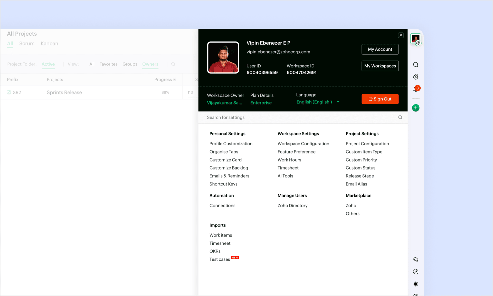
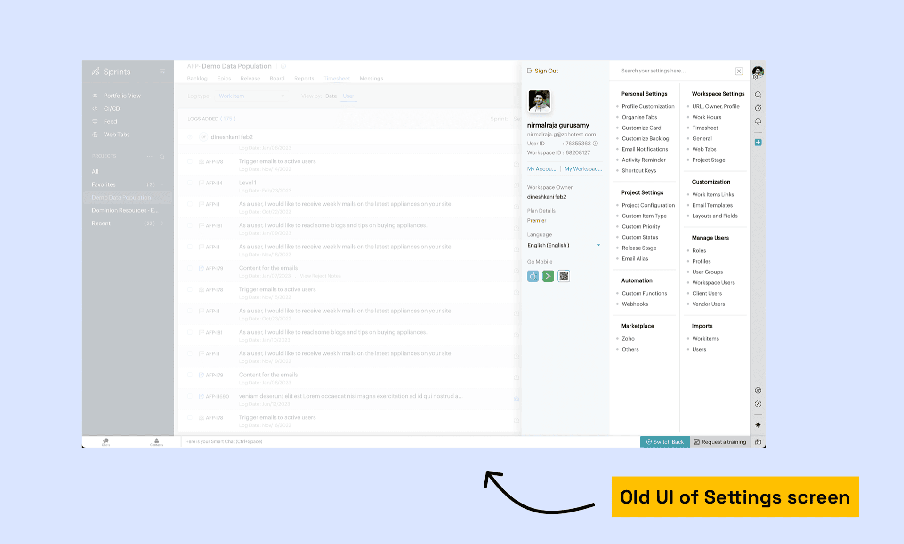
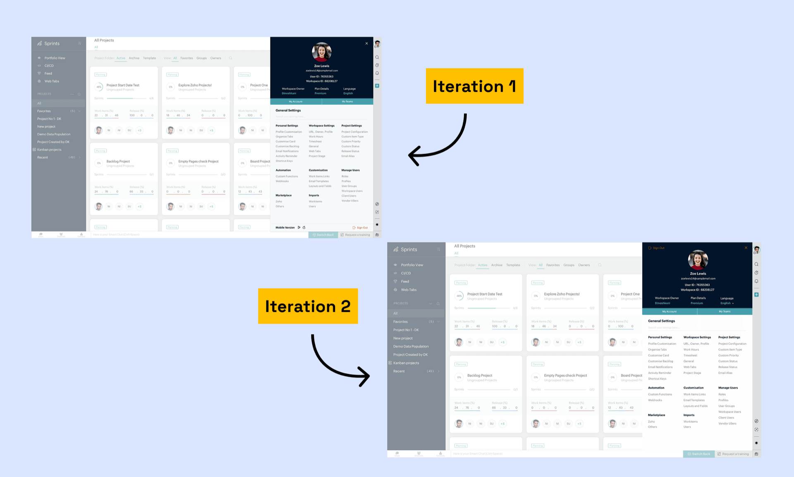
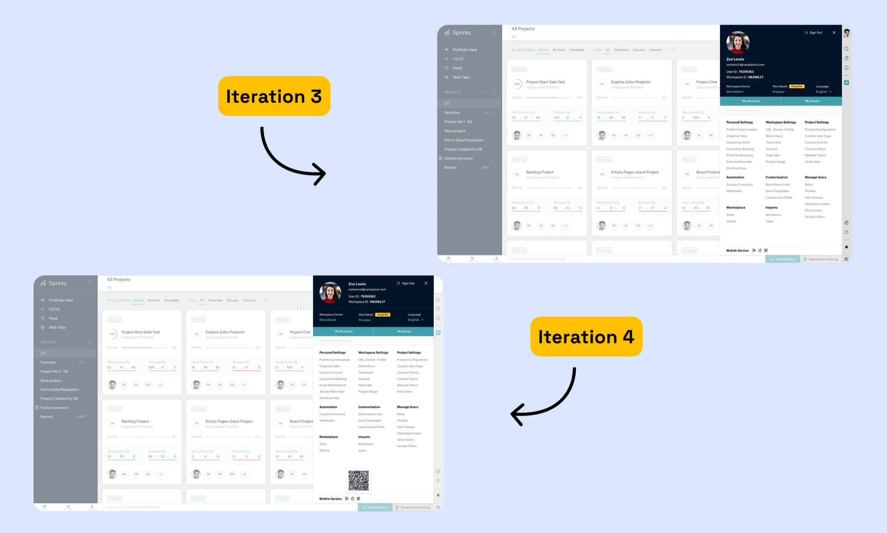
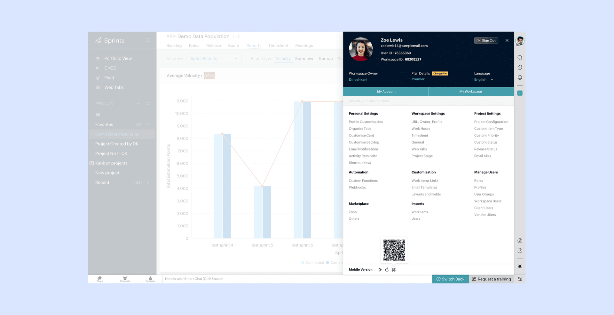
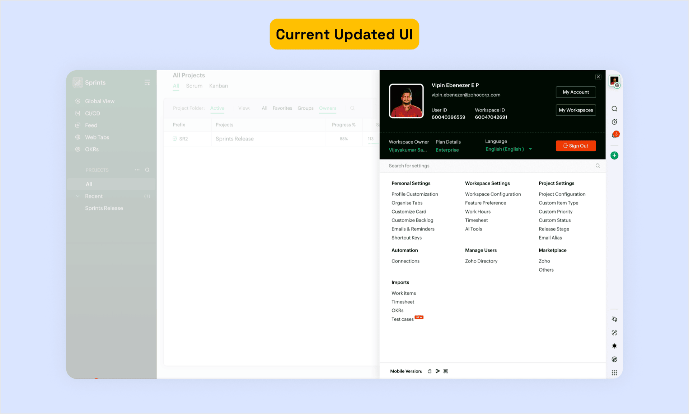

Settings Screen Redesign — Zoho Sprints
Redesigning the settings experience as part of Sprints 2.0
Key Takeaways
- Visual redesign, not re-architecture — all existing settings and behaviors stayed the same
- Profile section given proper visual prominence as the most-used area
- Clear section grouping with defined hierarchy made the page scannable

The Problem
Sprints 2.0 was getting a full visual overhaul, and most screens were being redesigned. The settings page was on the list — but it was treated as low priority since it "already worked."
I pushed for it to be included in the launch. Settings is one of the most frequently visited screens in the product, and the old version had zero visual hierarchy — every setting had the same weight, forcing users to read every label just to find what they needed.
What Was Wrong

The old settings page didn't look like a settings page. It was functional — everything worked — but the presentation didn't match the importance of what was there.
The profile section was one of the most-used parts, but it wasn't treated that way visually. There was no clear grouping, no real hierarchy. Everything sat at the same visual weight, so nothing stood out. You had to read every label to find what you needed.
I reviewed settings pages across Zoho's other products (Projects, CRM, Mail) to understand how they handled hierarchy — and noticed that the best ones all shared one pattern: the most-used section always had the most visual weight.
Constraints
This was a visual redesign, not a re-architecture. All existing settings and behaviors stayed the same. The layout needed to align with the rest of the 2.0 update — so it had to feel like it belonged in the new version, not like a leftover from the old one.
50K+ users already know where everything is. Moving settings around would cause confusion and support tickets.
Other screens (dashboard, board view, backlog) were being redesigned simultaneously. The settings page had to feel like the same product.
2-week timeline. No room for scope creep or re-architecture — this had to be a visual lift that engineering could implement quickly.
How It Evolved


I worked through several iterations, refining with feedback from my manager along the way.
The first thing I tackled was the profile section — giving it the visual weight it deserved. It was the most important area on the page but was being treated the same as everything else.
From there, it was about grouping and hierarchy. Related settings needed to sit together. Sections needed clear separation. The page needed to be scannable — you should be able to find what you're looking for without reading everything.
Consistency was the other thread throughout. The redesign had to match patterns used elsewhere in the 2.0 update. Anything that felt out of place got pulled back in line.
Final Design

- Profile section elevated — given a card treatment with avatar, name, and email prominently displayed. This is what users look for first.
- Clear section grouping — related settings grouped under headers with consistent spacing. Each group is visually distinct.
- Scannable layout — find what you need without reading every label. Section headers act as landmarks.
- Scalable structure — new settings can slot into existing groups without breaking the layout. The engineering team confirmed this made their implementation faster.
- 2.0 consistency — same card radius, spacing tokens, and typography as the rest of the redesign.
Before & After
After Shipping

The redesigned settings screen shipped with the 2.0 launch. It brought a frequently-used screen up to the same standard as the rest of the product.
The engineering team implemented it in under a week — because the structure was clear and the specs aligned with existing components. No custom components needed, which was a deliberate choice.
Post-launch, the settings page became the template for settings screens in other Zoho Sprints modules — the pattern I established is now reused across the product.
What I Took Away
Advocate for the unglamorous work. Settings pages don't win design awards. But they're where users go when something matters — changing their profile, managing their team, updating permissions. I pushed for this screen to be included in the 2.0 launch rather than deferred. Boring screens deserve the same craft as flashy ones.
Hierarchy is the whole game. The old page had the same content as the new one. The difference was just how it was organized and weighted. Same information, completely different experience. That's the power of visual design done right.
Design for the team, not just the user. The structure I created wasn't just scannable for users — it was easy for engineers to implement and easy for future designers to extend. That's design thinking beyond the screen.